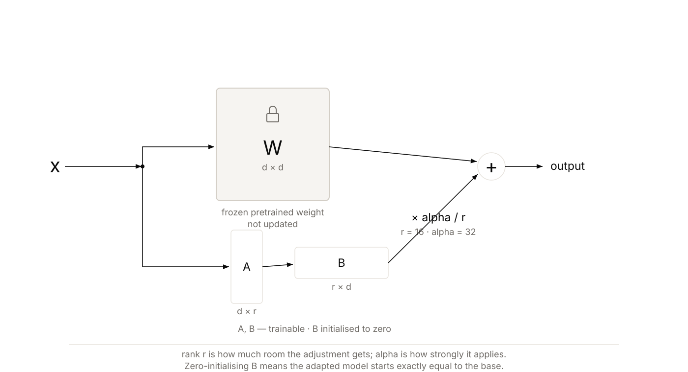
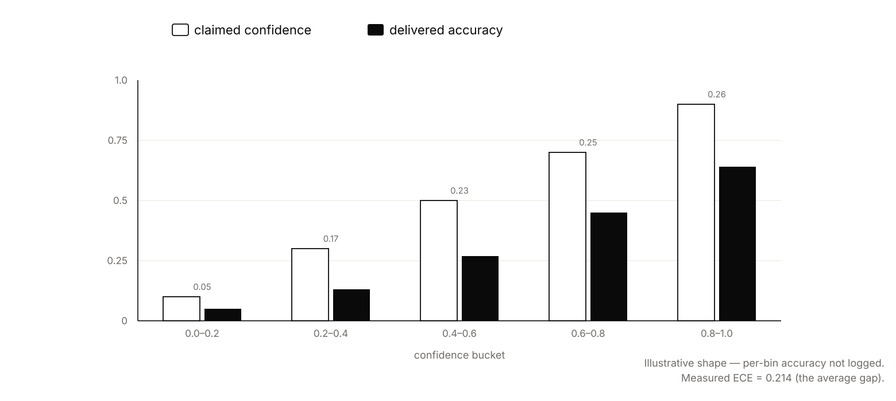

TL;DR
LoRA adapters trained on a 4-bit quantized Qwen2.5-Coder-1.5B, running locally on Apple silicon via MLX instead of a rented CUDA GPU, at 1.1 GB peak memory on a 16GB M1 Pro. Every generated query is parsed into an AST and allowed only if it is a single SELECT touching approved tables (a keyword blocklist was tried first and shown to fail both ways), and each query carries a calibrated confidence score, with anything below a threshold routed to a human. Fine-tuning lifted Spider execution accuracy from 42.5% to 47.5% and cut invalid SQL from 40% to 36%; behind the guard the fine-tuned model reaches 60% execution accuracy at 12% invalid SQL, and the guard blocked 100% of a 300-query red team while the keyword blocklist got 4 of 6 cases wrong.
Introduction
Natural-language SQL puts data access in the hands of people who cannot read SQL. That is the entire value,
and precisely why the system must protect them: they cannot spot a query that is wrong, and certainly not
one that is destructive.
Two questions. Can a model small enough to run locally be taught to write correct SQL for a specific schema
and dialect? And can the surrounding system be made safe enough that a non-technical analyst using it is not
a risk to the database?
Fine-Tuning

LoRA freezes the pretrained weight and trains two small matrices beside it, rank 16 on 8 layers, peak 1.1 GB, on a 16GB laptop.
No equations: the base weight matrix is frozen; two small matrices train beside it and are added to its
output. Rank is how much room the adjustment gets (16 here); alpha how
strongly it applies (32). B starts at zero, so the adapted model begins exactly equal to the
base and improves from there.
The prompt template is a contract
One module, imported by both the training project and the serving project. If they drift, the model is asked to work against a format it never saw, and the failure looks like "the fine-tune didn't work" rather than "the prompt changed".
Schema serialisation is a real trade
Table name plus column names is the choice; types and sample rows roughly triple the token count for a modest gain, and sequence length is the binding constraint in 16GB. Examples over the cap are dropped and counted, never truncated, 73 of 7,000 (1.0%), because a truncated example teaches the model to emit truncated SQL.
The baseline is measured before training
Deliberately, 42.5% execution accuracy, 40% invalid SQL on 200 Spider dev examples, so the fine-tuned comparison cannot be quietly flattered after the fact.
The result that surprised me: LM loss and task accuracy diverge
The standard rule says watch validation loss; when it rises while training loss falls, you are
overfitting, so stop. The run showed the exception. Validation (next-token) loss bottomed at iter
200 (1.41) and then climbed steadily to 2.09 at iter 2000, the textbook overfitting signal. But
execution accuracy did the opposite: +0 points at 200 iters, +1 at 600, +5 at 2000. For a task metric,
the language-modelling loss is the wrong early-stopping signal; you have to evaluate the task
itself. Early-stopping on val loss would have shipped a model with no gain at all.
Guardrails
The blocklist is built first, and it fails 4 of 6 test cases, in both directions at once.
Two false alarms
Legitimate queries refused because the word "delete" appears inside a string literal, and inside a comment, places where it has no power at all. Users blocked for no reason route around the tool, which is how shadow database access starts.
A bypass
CREATE TABLE passes because nobody thought to list "create". Every new pattern is another round of whack-a-mole.
A category it cannot see
A blocklist of verbs has nothing to say about which tables you may read. An ordinary SELECT walks restricted data straight out.
![Side-by-side comparison. The left panel shows a keyword blocklist refusing a legitimate query because the word delete appears inside a string literal, and allowing a CREATE TABLE statement because that keyword was never listed, failing four of six test cases. The right panel shows the AST guard parsing SQL into a syntax tree and applying three structural checks in sequence, exactly one statement, the statement is a SELECT, and every table including those in nested subqueries appears in the allowlist, allowing the query only if all three pass and otherwise refusing with a stated reason, blocking all three hundred red-team queries.](figures/sql-guard-ast.svg)
String matching inspects characters. What matters is structure, the blocklist got 4 of 6 wrong; the AST guard blocked 300 of 300.
Then the AST guard: parse with sqlglot, allow only a single SELECT touching
approved tables. The shift is from denying what you can think of to allowing only what you
approved, a verb invented after the code was written is refused by default. Because the parser walks
the whole tree, a restricted table reached through a nested subquery is caught for free. Measured: 300 of
300 red-team queries blocked across 20 databases, 100%. It also caught the fine-tuned model's own
mistakes: when the model emitted a malformed nested subquery, the guard refused it as unparseable rather
than executing garbage.
Calibration

A confidence score is a promise. Calibration measures whether it is kept, bucket by bucket, because averages hide the failure. Measured ECE: 0.21.
The guard stops catastrophe. It does nothing about a safe SELECT that answers the wrong
question. So each query carries a confidence score, and anything below a threshold goes to a human. That
plan is sound only if the score means something. Calibration is whether it does;
ECE is the average gap between claimed and delivered confidence, measured in bins. Measured
here: ECE = 0.21, moderately miscalibrated, and honestly reported as such rather than assumed to be
trustworthy.